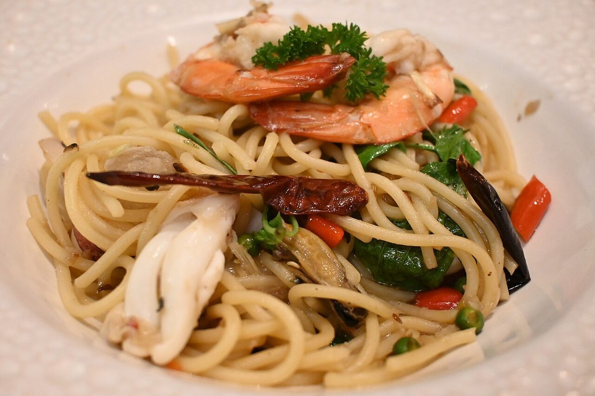
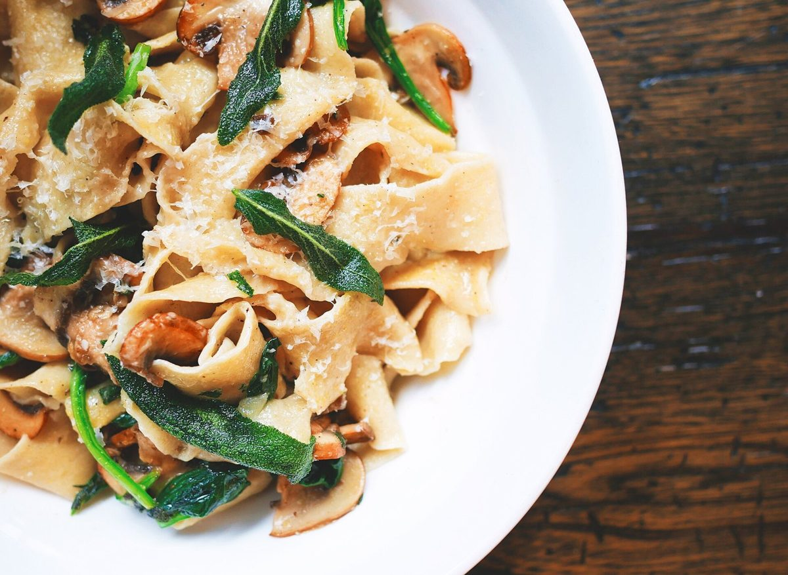
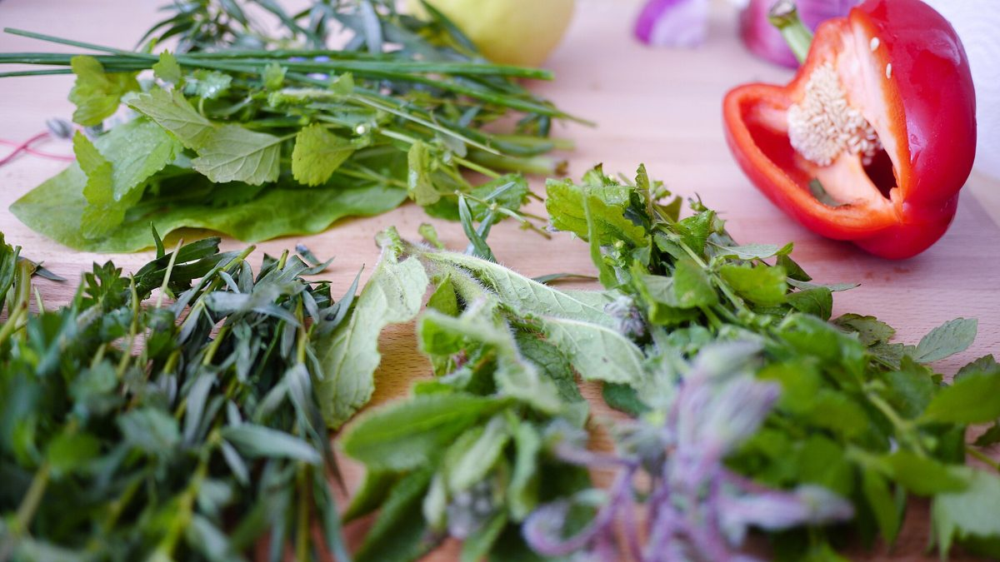

カフェ / 大阪府枚方市朝日丘町
Pasta and CafeFUNDAN
大阪府枚方市朝日丘町にあるカフェ「Pasta and Cafe FUNDAN」のご案内ページです。営業時間やメニューなど詳しいことは準備中。電話は 072-391-5871、Instagramもどうぞ。

制作側の連想
屋号の「Pasta」から、麺の太さ見本を連想しました
屋号に「Pasta」とあるので、制作側は乾麺の太さを並べた見本を思い浮かべました。このサイトでは、各ページの線の太さが細いものから太いものへ順に変わります(1ページ目がいちばん細く、5ページ目がいちばん太い)。これは制作側の連想で、お店の理念・由来とは無関係です。店名の意味は分かりません。
- ホーム
- 店のこと
- メニュー
- 口コミ
- アクセス
写真の見本帖(イメージ)
線の脇に並べる、国外・撮影地不明の写真。
お店の写真ではありません。皿・ハーブ・飲み物のイメージとして選んだフリー素材です。



ご案内
お店のこと(確認できたものだけ)
| 所在地 | 〒573-0026 大阪府枚方市朝日丘町2-2 |
|---|---|
| 電話 | 072-391-5871 |
| 営業時間 | 準備中 |
| 定休日 | 準備中 |
| ご予約 | 準備中 |
| 駐車場 | 準備中 |
| SNS | Instagram @fundan_hirakata |